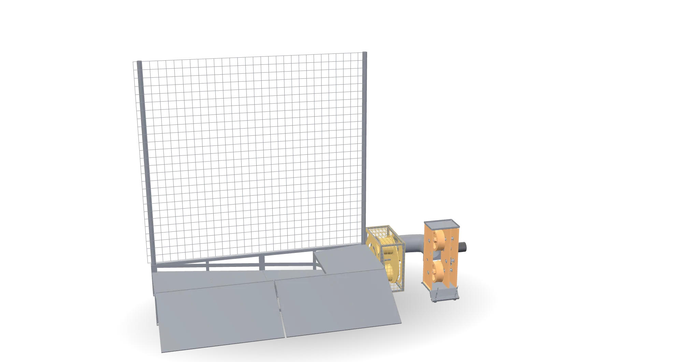
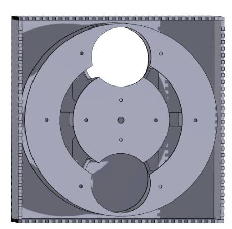
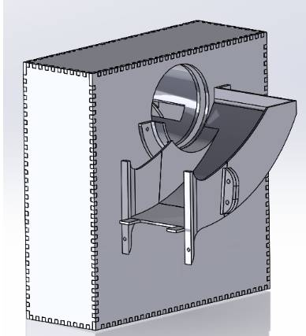
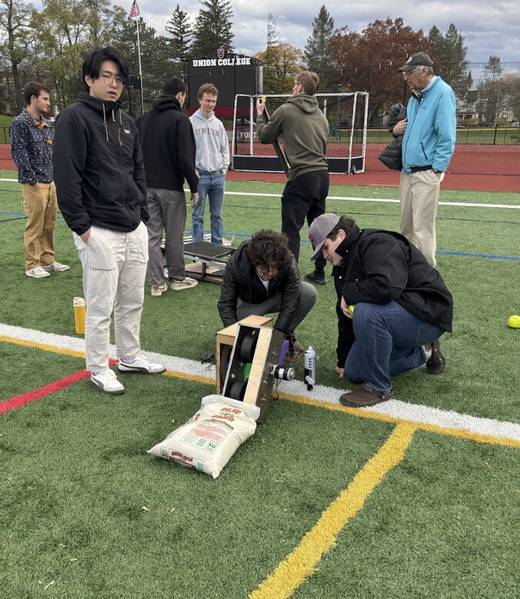
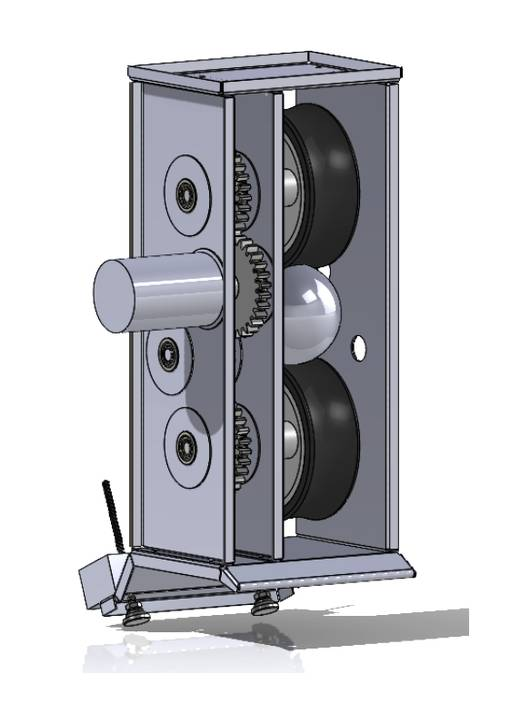
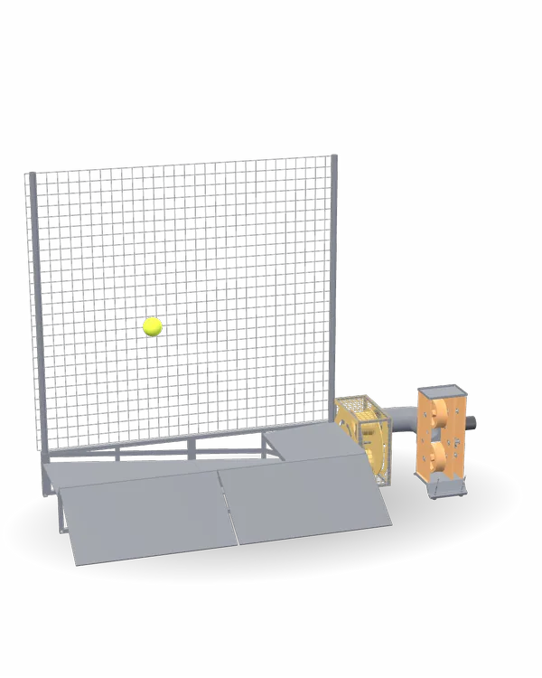

Case study / Senior capstone
Robo-Catcher
A machine that catches the ball and returns it. Our capstone team built it for under $700.
02 / 05

- Role
- Feeding subsystem co-lead, all electronics and firmware
- Team
- 12
- Build
- Laser cut HDF and 3D printed parts
- Timeline
- 2025
Highlights
Highlights
- 100%
- Feed indexing, competition day
- <$700
- Total build cost
- 55 lb
- One person portable
- 1.5 hr
- Runtime, one 12 V 20 Ah battery
How it works
How it works
01
The feeder
The feeder is a rotating dual chamber: catch a ball, rotate 180 degrees, hand it to the return flywheel.


02
Electronics and firmware
One ESP32 runs everything. A wireless remote starts and stops it.


03
The result
- 100% feed indexing on competition day: every ball delivered, no misses
- Under $700 total build cost against a $700 cap
- 55 lb, one person portable, assembles with no tools
- 1.5 hours continuous runtime on a single 12 V 20 Ah SLA battery

04 / What i learned
The MATLAB torque study felt slow while teammates were already printing parts. Then the feeder ran a full competition day without a missed index.
Specs
Tech specs
Tech specs
Robo-Catcher

- Role
- Feeding subsystem co-lead, all electronics and firmware
- Team
- 12
- Build
- Laser cut HDF and 3D printed parts
- Timeline
- 2025
- Key figures
- 100% Feed indexing, competition day
- <$700 Total build cost
- 55 lb One person portable
- 1.5 hr Runtime, one 12 V 20 Ah battery